“Buenísimo! Siempre que vengo todo delicioso, limpio, buena atención y buena relación de costos! La verdad muy recomendado”
Jessica Venegas
Google Maps
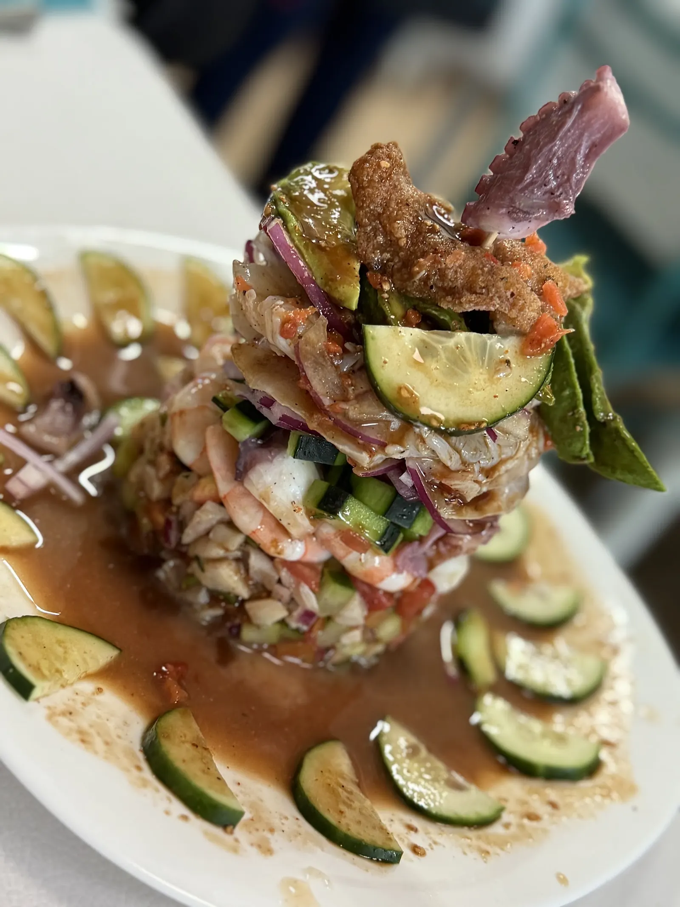
Cocina del Pacífico, estilo Sinaloa. Torres, ceviches y molcajete.
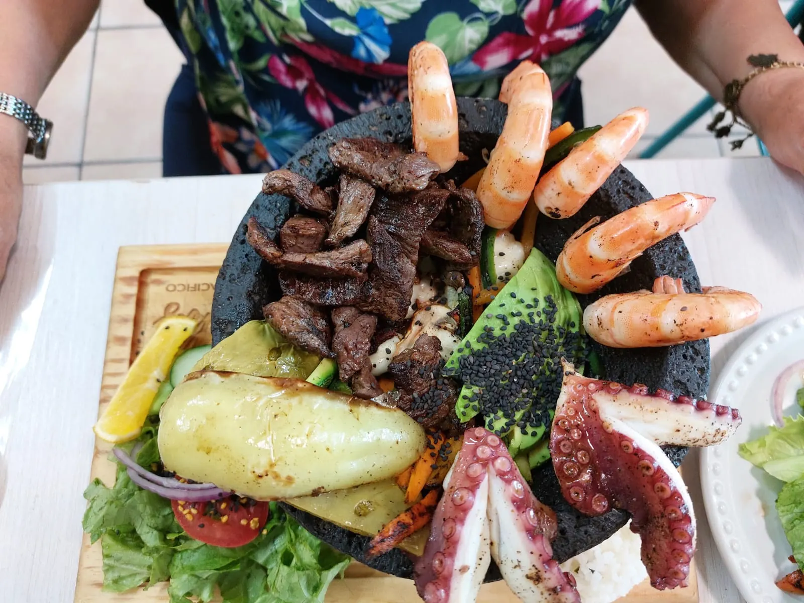
La carta
Precios de la carta del local. Pueden cambiar.
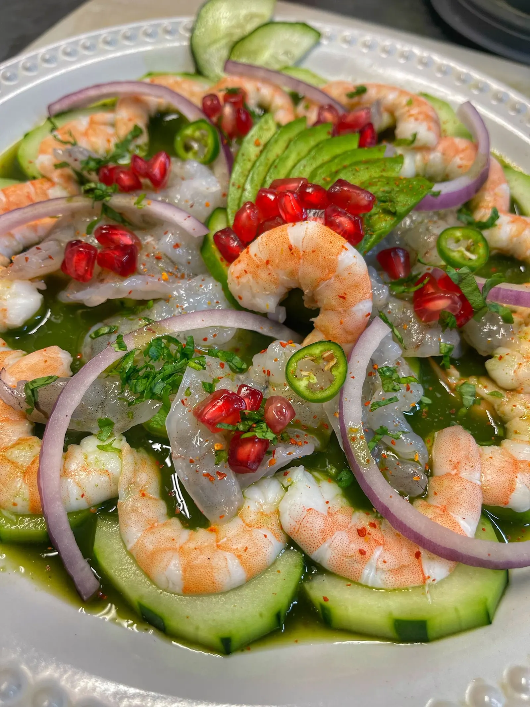
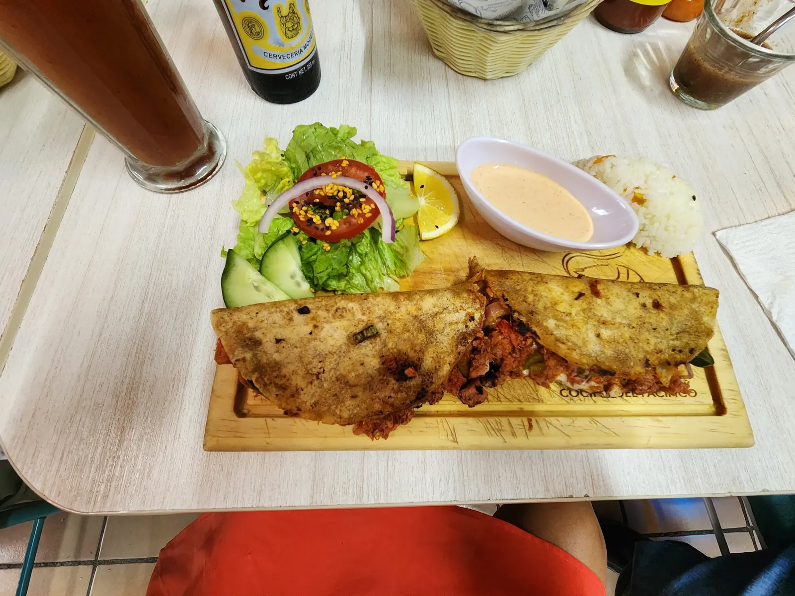
La tabla del grupo
Pon a todos en la mesa y saca la cuenta antes de salir.
Toca un plato para cambiar lo que pide esa persona.
Con precios de la carta. Confirmamos por WhatsApp.
“Buenísimo! Siempre que vengo todo delicioso, limpio, buena atención y buena relación de costos! La verdad muy recomendado”
“Buen lugar para comer mariscos y pescados. Vale mucho la pena la visita, la comida es muy rica y servida en porciones generosas para compartir. El ambiente es agradable y cómodo”
“Bonito lugar, me gustó que la cocina y los baños estén en el primer piso y en el segundo las mesas, buen ambiente familiar, la decoración muy creativa con botellas de vino tinto, la comida muy original y abundante.”
“Muy rico todo, super recomendable.”
Comida 5, servicio 5, ambiente 5.
Comida 3, servicio 5, ambiente 5.
El recorrido
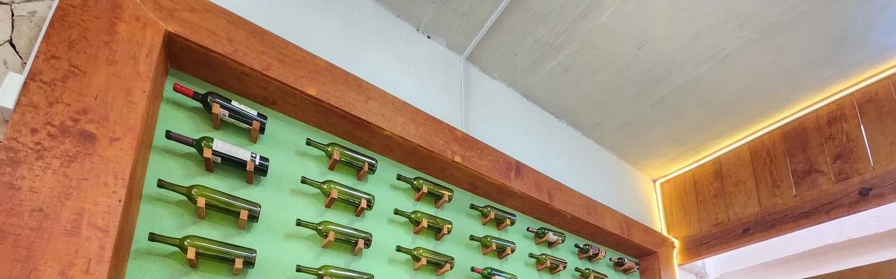
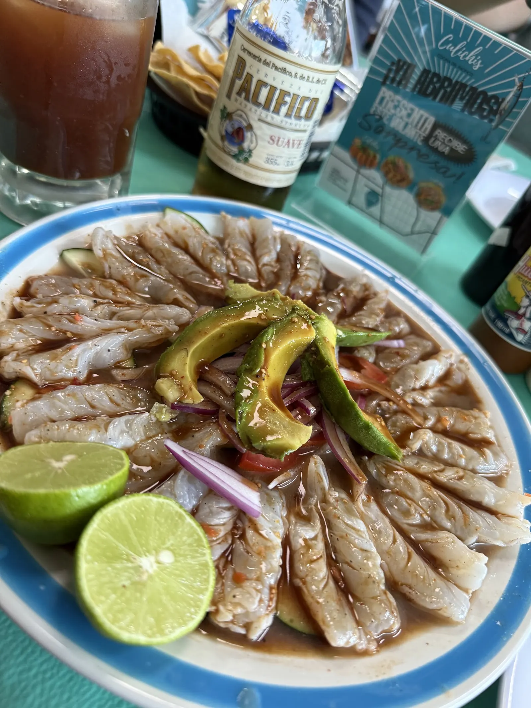
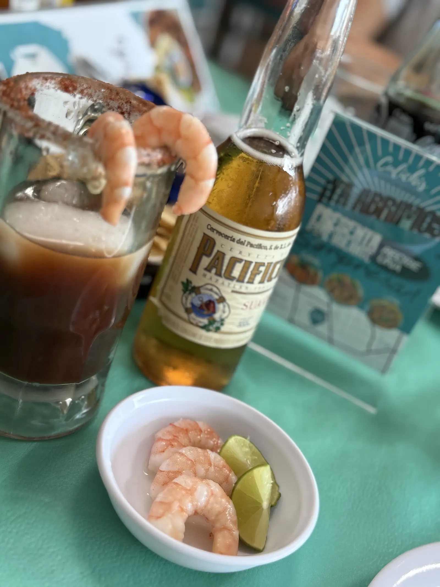
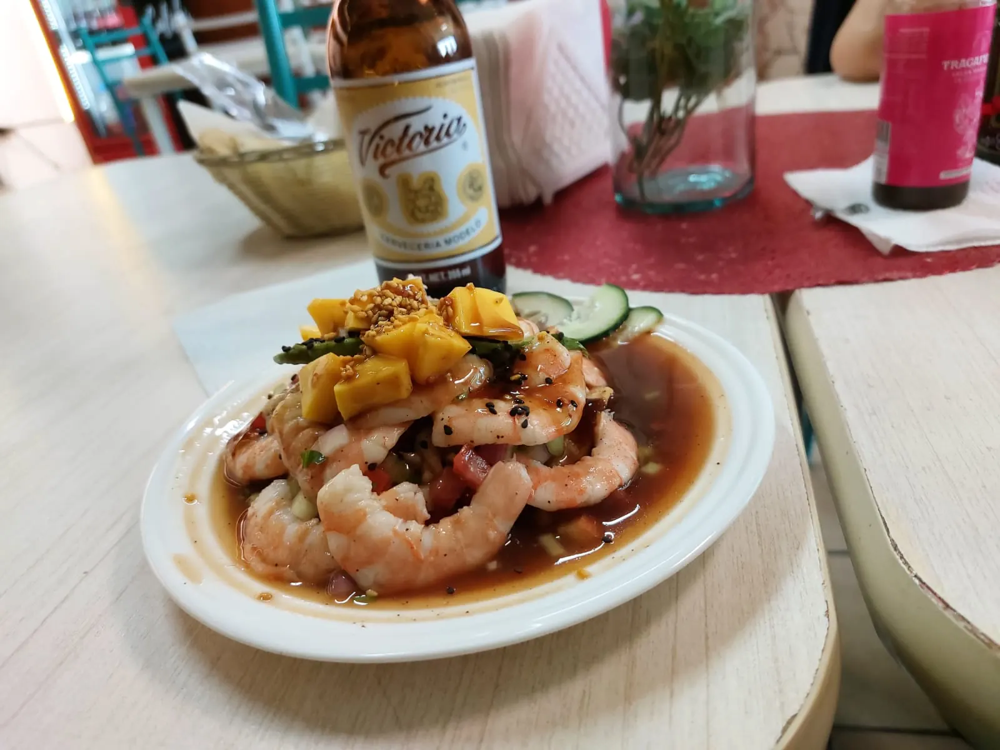
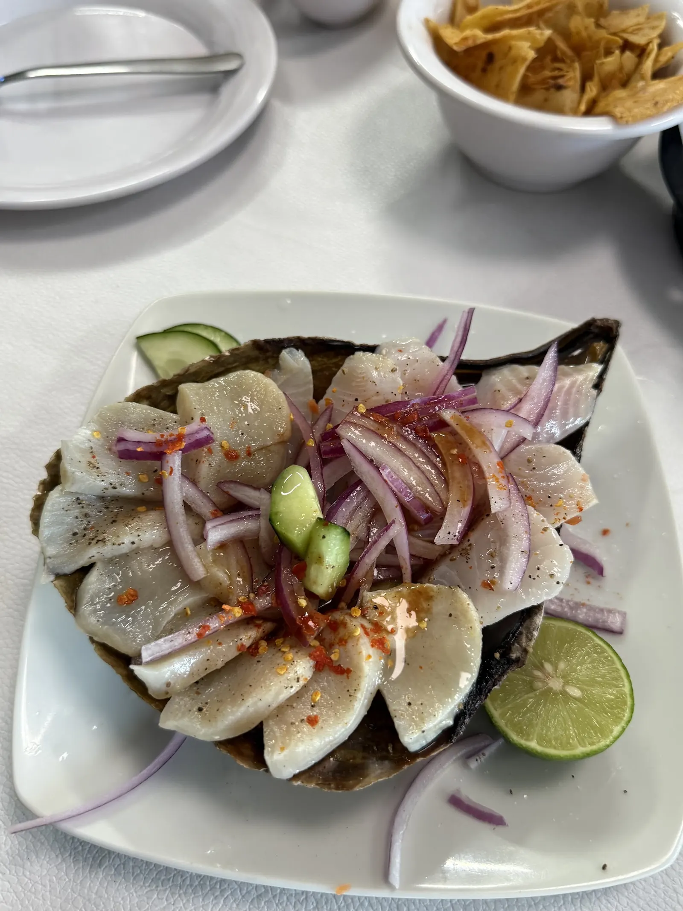
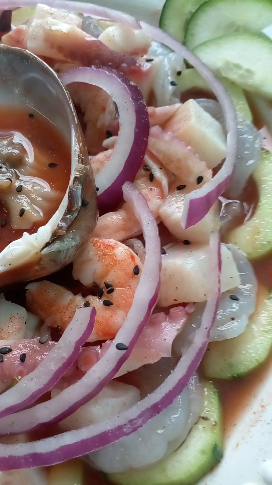
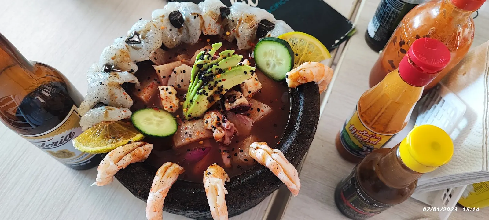
Visítanos
Av. Canal Interceptor 622Unión Ganadera, 20130 Aguascalientes, Ags.
Revisa el horario
Falta poco
Pásanoslo por el mismo chat donde te llegó esta muestra.